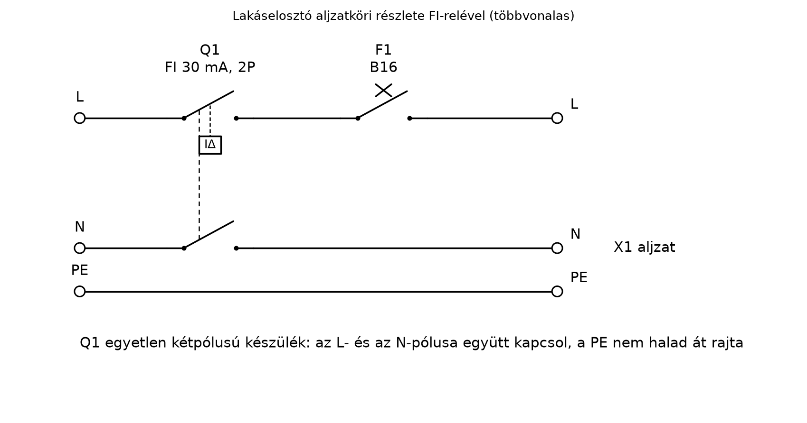

Egy lakásfelújítás során a szerelő nemcsak azt dönti el, hogy hová kerüljön aljzat, hanem azt is, hogy hány aljzat kapcsolódhat egyetlen áramkörre, mekkora vezeték és mekkora védő tartozik elé, és hogy az adott helyiségben – konyha, fürdőszoba, terasz, pince – milyen kiegészítő védelmi szabályok érvényesek. A rossz tervezés két tipikus következménye: a kismegszakító állandó leoldása, vagy ami rosszabb, a vezeték tartós túlterhelése, ami melegedést, szigeteléskárosodást és tűzveszélyt okoz. Ebben az alfejezetben az aljzatköröket, a nagyobb fogyasztók csatlakoztatását és a nedves, illetve kültéri helyiségek különleges követelményeit járjuk körbe, a Terhelhetőség, melegedés és javítótényezők alfejezetben tanult lánc alkalmazásával.
Motiváció. Nincs értelme minden aljzatot egyetlen 16 A-es körre kötni, ha a nappaliban egyszerre üzemel a porszívó és a hősugárzó; viszont az sem jó, ha minden szobához külön vastag vezetéket húzunk felesleges többletköltséggel. A gyakorlatban a helyiségek használati módjából és a várható fogyasztókból indulunk ki.
Szabály. Az aljzatkörök számát a szabvány nem rögzíti fix darabszámként; a tervezésnek azt kell biztosítania, hogy a várható egyidejű terhelés egyetlen körön se haladja meg a védőkészülék névleges áramát, és a védőkészülék névleges árama a vezeték terhelhetőségénél ne legyen nagyobb. Lakossági környezetben a legelterjedtebb megoldás: 16 A-es B jelleggörbéjű kismegszakító, rézvezeték, és legfeljebb hibaáramú áram-védőkapcsoló. Tervezési gyakorlat szerint egy általános aljzatkörre jellemzően 6–10 aljzat köthető, de ezt a tényleges terhelés dönti el (ellenőrizendő: a konkrét létesítési gyakorlat és az áramkörök számának előírása a hatályos MSZ HD 60364 sorozatban).
Számítás – nappali aljzatkör terhelése.
Tegyük fel, hogy a nappaliban a következő fogyasztókat kívánják
egyszerre használni:
Az összes üzemi teljesítmény:
Egyfázisú, -os körön az üzemi áram:
Ez nagyobb, mint a 16 A-es kismegszakító névleges árama, tehát egyetlen aljzatkör nem elég. Osszuk két körre:
Mindkét körhöz rézvezetéket és B16 kismegszakítót választunk. A vezeték terhelhetősége például falba süllyesztett védőcsőben, egyerű PVC-szigetelésű rézvezetőkkel (B1) (lásd a Vezetékek és kábelek szerelési módjai alfejezetet; ellenőrizendő: MSZ HD 60364-5-52; csoportosítási vagy hőmérsékleti tényezővel ez csökkenhet). Ellenőrizzük az láncot:
A választás mindkét körre megfelel.
Továbbvitt eredmény. Az méretezési láncot és a korrigált meghatározását az aljzatkörök után a Csatlakozás a közcélú hálózathoz, mérőhely alfejezetben a mérőhely és a fővezeték méretezésénél is használjuk.
Az aljzatkörök védelmét szemlélteti a következő ábra:

Az ábrán felül az L fázisvezető: a betáplálás után a kétpólusú, 30 mA-es Q1 FI-relé, majd az F1 B16 kismegszakító következik, és innen megy a vezeték az X1 aljzat L kapcsára. Az N vezető is átmegy a Q1 FI-relén (csak így érzékelheti az L és az N áramának különbségét), majd az aljzat N kapcsára jut. A PE nem halad át a FI-n: a PE gyűjtősínről közvetlenül az aljzat védőérintkezőjére csatlakozik.
Szabvány. Az MSZ HD 60364-4-41 szerint a legfeljebb 32 A névleges áramú, általános használatra szolgáló csatlakozóaljzatokat kiegészítő védelemként legfeljebb névleges hibaáramú áram-védőkapcsolóval kell védeni. Ez a kiegészítő védelem nem helyettesíti az alapvédelmet és a hibavédelmet. A pontos alkalmazási feltételeket a hatályos szabványkiadás tartalmazza (ellenőrizendő: a szabvány aktuális szakasza és az RCD-követelmény).
A lakossági elosztóban a nagyfogyasztóknak általában saját áramkört alakítanak ki, hogy a meghibásodás vagy túlterhelés ne üsse ki a többi aljzatot és világítást.
Tűzhely (villanytűzhely).
A tűzhelyek egyfázisú és háromfázisú csatlakozással is készülnek.
Bojler (vízmelegítő).
Egy 2 kW-os bojler üzemi árama:
Önálló körként 10 A-es B kismegszakító és legalább rézvezeték választható, feltéve, hogy a vezeték korrigált terhelhetősége legalább 10 A (). Gyakorlatban a bojlerkört is gyakran vezetékkel alakítják ki, és 30 mA-es RCD-vel védik.
Klíma.
A klímaberendezések saját kört kapnak, mert a kompresszor indítási árama
rövid időre többszöröse is lehet az üzemi áramnak. Egy készülék
hűtőteljesítménye például
,
a felvett villamos teljesítménye
.
Az üzemi áram:
A névleges áram kicsi, de a bekapcsolási csúcs miatt 16 A-es B kismegszakítót és vezetéket alkalmaznak. Ha a klíma csatlakozóaljzaton keresztül táplált, akkor a 30 mA-es RCD-védelem is szükséges.
Mosógép, mosogatógép.
Ezek a fogyasztók általában 16 A-es saját kört igényelnek
vezetékkel, és mivel víz közelében üzemelnek, 30 mA-es RCD-vel védettek.
A nedves helyiségben való elhelyezésük további zónaszabályokat hoz be,
amelyeket a következő szakasz tárgyal.
A fürdőszoba és a zuhanyzó különleges helyiség, mert a víz csökkenti a bőr ellenállását, és a nedves környezetben a hibás szerelvény közvetlen életveszélyt jelenthet. Ezért a szabvány külön zónákat határoz meg, és azokban korlátozza a villamos szerelvények feszültségét és védettségét.
Szabvány. Az MSZ HD 60364-7-701 jelű, fürdő- és zuhanyzóhelyiségekre vonatkozó szabvány zónabeosztást és IP-védettségi követelményeket ír elő. Az itt bemutatott zónahatárok, távolságok és védettségi fokozatok tájékoztató jellegűek; mindig a hatályos kiadás szerint kell ellenőrizni.
A leggyakrabban használt zónabeosztás:
Az alábbi ábra a zónákat kád mellett oldalnézetben (a) és alaprajzon (b), valamint tálca nélküli zuhanynál alaprajzon (c) mutatja. Kádnál a 0. zóna a kád belseje, az 1. zóna a kád fölött a kész padlószinttől mért 2,25 m magasságig tart, a 2. zóna a kád szélétől további 0,6 m-ig (1,7 m-es kádnál a faltól 2,3 m-ig). A körrel jelölt helyeken a szerelvény elhelyezhető (SELV-lámpa és rögzített vízmelegítő az 1. zónában, 230 V-os lámpatest a 2. zónában), a kereszttel jelöltekben nem: aljzat és kapcsoló csak a zónákon kívülre kerülhet. Tálca nélküli zuhanynál az 1. zóna a rögzített vízkifolyótól mért 1,2 m sugarú térrész (ellenőrizendő: MSZ HD 60364-7-701).
Az interaktív változatban kád, zuhanytálca vagy tálca nélküli zuhany választható; az aljzatot, lámpatestet, SELV-lámpát, kapcsolót vagy vízmelegítőt kattintással elhelyezve az oldal kiírja a zónát, azt, hogy a szerelvény ott elhelyezhető-e, és milyen IP-fokozat, illetve RCD-védelem kell hozzá.
A fürdőszobai aljzatoknál a helyes gyakorlat az, hogy az aljzatot a mosdókagylótól és zuhanyzótól minél távolabb, a 2. zónán kívülre teszik, saját RCD-s körre, és a szerelvény IP44-es vagy magasabb védettségű. A pontos zónahatárokat a szabvány aktuális kiadása adja meg.
Megjegyzés. A zónahatárok értelmezésekor a kád vagy zuhanytálca széleitől kell mérni; a falra szerelt zuhanyfej esetén a vízsugár által elért térrész is a besorolást befolyásolja. Ezt mindig a tervben és a gyártói adatlapokkal együtt kell ellenőrizni.
Kültéren, teraszon, kertben és pincében az aljzatok fokozott nedvesség- és mechanikai hatásnak vannak kitéve, ezért:
A kültéri aljzat saját körön általában 16 A-es B kismegszakítóval és rézvezetékkel készül, a fedél pedig zárt állapotban is biztosítja a csepegő víz elleni védelmet.
Biztonsági korlát. A feladat tanműhelyi (törpefeszültségű) környezetre vagy jogosult oktató felügyeletére vonatkozik; hálózati feszültségen önállóan ne végezd.
Egy fürdőszobafelújítás során a szerelő 230 V-os aljzatot helyezett el a mosdókagyló fölött, közvetlenül a 2. zónán belülre, IP20-as szerelvénnyel, és nem védte RCD-vel. A felülvizsgálaton a mérnök megállapította, hogy az aljzat nem felel meg a zónabeosztásnak és a védettségi követelménynek, mert vízpermet érheti, és hiányzik az áram-védőkapcsolós kiegészítő védelem. A javítás az aljzat áthelyezése a 2. zónán kívülre, IP44-es szerelvény beépítése és saját 30 mA-es RCD-kör kialakítása volt. A tanulság: a fürdőszobai szerelvények esetében először a zónát kell meghatározni, és csak azután lehet kiválasztani a szerelvényt.
A válaszokat lásd a Megoldások szakasz elején.
1. feladat (A). Sorold fel, hogy egy általános lakószobai aljzatkörhöz milyen védelmi és vezetékparaméterek tartoznak jellemzően.
2. feladat (A). Egy bojler névleges teljesítménye . Számítsd ki az üzemi áramot 230 V-on.
3. feladat (B). Egy háromfázisú tűzhely adattáblája: , . Feltéve, hogy a terhelés szimmetrikus, számítsd ki a vonali (fázis-) áramot.
4. feladat (B). Rajzold le egyszerű, egyvonalas kapcsolási rajzon a konyhai aljzatkör elosztói részletét: FI-relé (30 mA), B16 kismegszakító, aljzat. A rajz tartalmazzon L, N és PE jelölést a szöveg szintjén.
5. feladat (C). Egy kültéri aljzatkört terveznek 16 A-es B kismegszakítóval és rézvezetékkel. A kábel a falon rögzítve fut (C módszer), referencia-terhelhetősége (PVC, két terhelt ér; lásd a Vezetékek és kábelek szerelési módjai alfejezet diagramját; ellenőrizendő: MSZ HD 60364-5-52), a környezeti hőmérséklet-javító tényező , a csoportosítási tényező , a hőszigetelés-javító tényező . Számítsd ki a korrigált értéket, és döntsd el, hogy megfelel-e a 16 A-es védelem.
6. feladat (D). Fürdőszobában egy aljzat a mosdókagyló mellett, a 2. zónában van. A kivitelező IP20-as aljzatot tett fel, és nem védte RCD-vel. Írd le, milyen hibát találtak a felülvizsgálaton, és mi a helyes javítás.
1. feladat (A).
Általános lakószobai aljzatkör: 16 A-es B kismegszakító,
rézvezeték, 30 mA-es RCD, N és PE vezetők. A kör jellemzően 6–10
aljzatot tartalmaz, a tényleges terheléstől függően.
2. feladat (A).
Adott:
,
.
Képlet:
.
Behelyettesítve:
Ellenőrzés:
,
tehát a 10 A-es védő kevés lenne, 16 A-es szükséges.
3. feladat (B).
Adott:
,
,
háromfázisú szimmetrikus. Képlet:
.
Behelyettesítve:
Ellenőrzés:
,
az eredmény 12 A, ami elég egy 16 A-es kismegszakítóhoz.
4. feladat (B).
A rajzot a fenti kapcsolási rajz mutatja. Egyvonalas rajzon az
elosztótól az aljzatig egy vonal fut, rajta három ferde vonás (L, N,
PE). A vonalon sorban a Q1 FI (2P, 30 mA, a jel mellett „2” a
pólusszám), az F1 B16 kismegszakító és az X1 aljzat rajzjele áll; a PE a
FI-t és a kismegszakítót nem érinti – ezt a fenti többvonalas rajz
részletezi. Az egyvonalas leírás: L – FI-relé (30 mA) – B16
kismegszakító – aljzat; az N és PE vezetők az aljzathoz külön érkeznek.
A szöveges leírás: az elosztóban az L fázist a FI-relén átvezetve kötjük
a B16 kismegszakító bemenetére, majd a kimenetről az aljzat L kapcsára.
Az N a FI-relé N kapcsán át az aljzat N kapcsára, a PE közvetlenül a PE
gyűjtősínről az aljzat védőérintkezőjére megy.
5. feladat (C).
Adott:
,
,
,
.
Képlet:
.
Behelyettesítve:
Ellenőrzés:
,
majd
.
A 16 A-es kismegszakító névleges árama kisebb, mint
,
tehát a védelmi lánc megfelelő, ha az üzemi áram sem haladja meg a 16
A-t.
6. feladat (D).
A felülvizsgálaton az alábbi hibák láthatók: aljzat van a 2. zónában,
ahol dugaszolóaljzat nem helyezhető el; ezen felül IP20-as a szerelvény
(legalább IPX4 kell), és hiányzik a 30 mA-es RCD-védelem. Vízpermet
érheti a csatlakozóaljzatot, és földzárlat esetén nem történik meg a
kiegészítő lekapcsolás. A helyes javítás: az aljzat áthelyezése a 2.
zónán kívülre, IPX4 vagy magasabb védettségű szerelvény beépítése, és az
áramkör ellátása saját 30 mA-es RCD-vel.
Az aljzatkörök tervezésénél a várható egyidejű terhelésből indulunk ki, és minden körre ellenőrizzük az láncot. Általános lakossági aljzatkörhöz 16 A-es B kismegszakító, rézvezeték és 30 mA-es RCD tartozik; a nagyfogyasztók (tűzhely, bojler, klíma, mosógép) saját kört kapnak. Fürdő- és zuhanyzóhelyiségekben a zónák (0., 1., 2.) és az IP-védettségek határozzák meg, hol és milyen szerelvény helyezhető el; 230 V-os aljzat a 2. zónán kívül, 30 mA-es RCD-vel és megfelelő védettséggel telepíthető. Kültéri és pincei aljzatoknál ugyancsak kötelező az RCD-védelem. Továbbvitt eredmény. Az aljzatkörök vezeték- és védelemválasztását, valamint az láncot a Csatlakozás a közcélú hálózathoz, mérőhely alfejezetben a mérőhely és a fővezeték méretezésénél alkalmazzuk.
A fejezetben hivatkozott szabványok az MSZ HD 60364 sorozat, elsősorban az MSZ HD 60364-4-41 (kiegészítő védelem), az MSZ HD 60364-7-701 (fürdő- és zuhanyzóhelyiségek) és az MSZ HD 60364-5-52 (vezetékek terhelhetősége). A zónahatárok, az IP-védettségek, a vezeték-terhelhetőségi értékek, a javítótényezők és az RCD-követelmények a szabvány aktuális kiadásától függnek; az itt szereplő számértékek tanulási példák, és üzemeltetés vagy tervezés előtt ellenőrizni kell a hatályos szabványt és a gyártói adatlapokat.